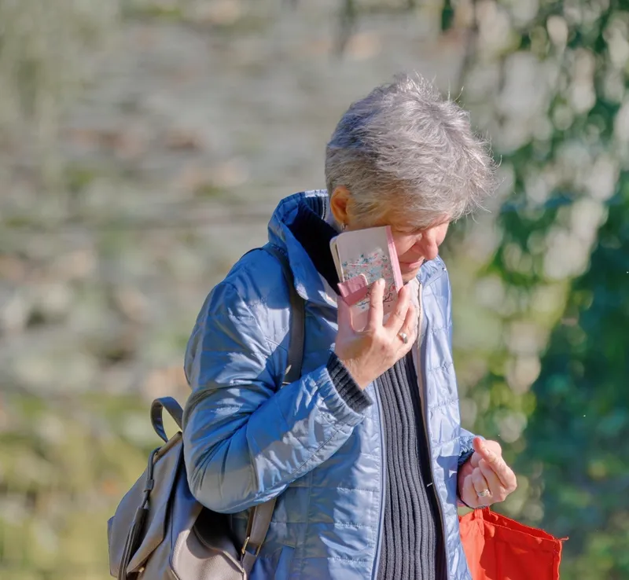

O que é o golpe do falso INSS
Golpistas se passam pelo INSS ou por bancos parceiros, ligando, mandando SMS ou mensagem no WhatsApp oferecendo empréstimo consignado com "aprovação garantida" ou avisando sobre uma "margem liberada". O objetivo é conseguir seus dados pessoais, sua senha do gov.br, ou fazer você pagar uma "taxa" antecipada.
Sinais de que é golpe
- Pedem sua senha do gov.br ou código de verificação recebido por SMS
- Pedem PIX ou pagamento antecipado de qualquer "taxa de liberação"
- Prometem aprovação garantida sem nenhuma análise
- Mandam link curto ou desconhecido pra "atualizar cadastro"
- Criam urgência: "só hoje", "sua margem vai expirar"
⚠️ O INSS nunca liga oferecendo empréstimo, nunca pede sua senha por telefone, e nunca cobra taxa antecipada pra liberar consignado. Nenhuma instituição séria pede isso.
Como confirmar se o contato é oficial
- Desligue e ligue de volta pro telefone oficial do INSS: 135
- Consulte seu extrato diretamente no app Meu INSS, nunca por um link recebido
- Se for uma instituição financeira, confirme o CNPJ e busque reclamações no Reclame Aqui e no Banco Central
Se você já passou dados, o que fazer
- Troque a senha do gov.br imediatamente
- Registre um Boletim de Ocorrência
- Contate o INSS pelo 135 pra verificar se algum contrato foi aberto sem autorização
- Acompanhe seu extrato de consignado com frequência nas próximas semanas
Quer confirmar uma oferta antes de aceitar?
Manda pra gente pelo WhatsApp e a FelizCred te ajuda a checar se é real.
🚀 Simular crédito grátis 💬 Falar no WhatsAppPerguntas frequentes
Golpe do falso INSS
É quando golpistas se passam pelo INSS (por telefone, SMS ou WhatsApp) oferecendo empréstimo consignado com "aprovação garantida", pedindo dados pessoais, senha do gov.br ou pagamento antecipado de taxa.
Ligação falsa INSS
O INSS não liga oferecendo empréstimo nem pede senha por telefone. Se ligarem se identificando como INSS pra vender crédito consignado, desligue e ligue de volta pelo telefone oficial 135 pra confirmar.
Mensagem falsa INSS empréstimo
SMS ou WhatsApp com links pedindo pra "atualizar cadastro" ou "liberar empréstimo" geralmente são phishing. O INSS não envia links de contratação de crédito por mensagem — desconfie e nunca clique.